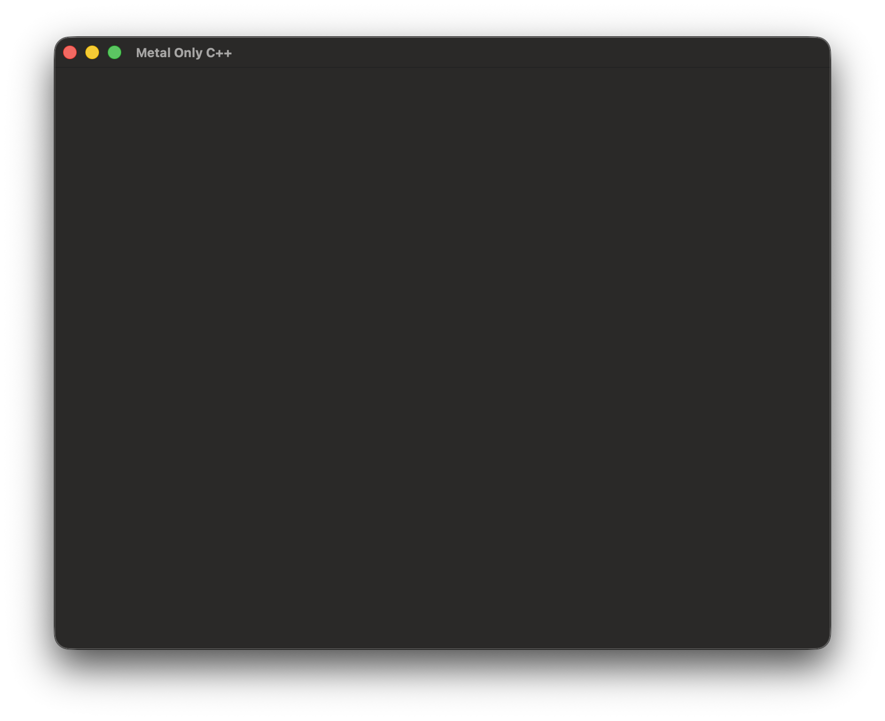
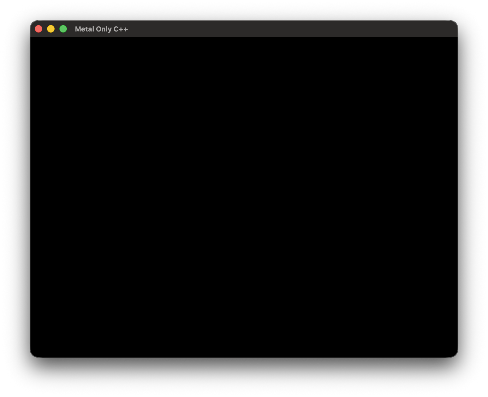
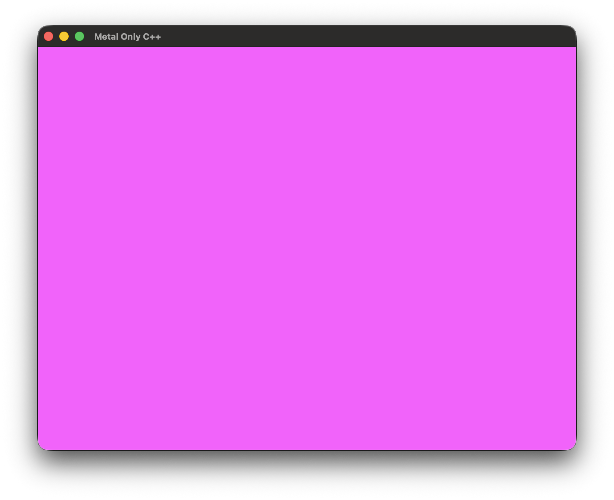
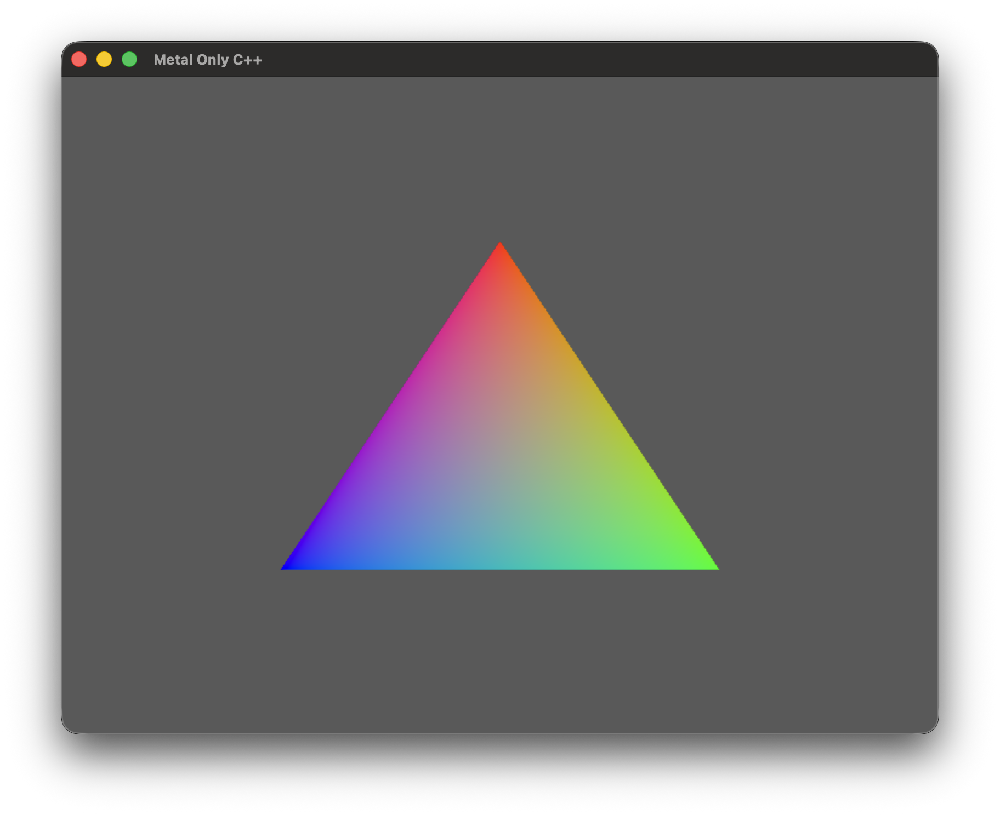

📅 04-Feb-2026
"Hello Triangle" with Metal-cpp and no ObjC
Table of contents
This article will serve as both a tutorial for those who don’t want to have to deal with ObjC, and as a demonstration of how I work with my own custom C++ build system “Dedalo”.
The build system
Dedalo is a strongly opinionated C++ build system, inspired by Swift and Zig. The goal is to have a build system that doesn’t require anything other than a C++ compiler and C++ code to work, no need to install anything, nor to learn a different bespoke language.
You can install Dedalo by copying the binary and cpp file in
the appropriate paths (or using make install), but you can
also distribute it with your program, so you don’t need to worry about
versioning. It’s just a single cpp file with no dependencies other than
the STL. The only thing needed to build a C++ project with Dedalo is a
C++ compiler that supports C++20.
Getting started
- Create a new directory and place
dedalo.cppin there. - Compile it like this
clang++ -std=c++20 -O3 dedalo.cpp -o ddl- If you want logs, add
-DENABLE_LOGS
- If you want logs, add
- Initialise the project like this
./ddl init
You should now have a file structure like this:
$ tree -L 3
├── build
│ ├── cache
│ │ └── lto
│ └── obj
├── build.cpp
├── ddl
├── dedalo.cpp
├── lib
└── src
└── main.cppIf you run it like this ./ddl run you should get a
“Hello, World!” message.
Sorting out the dependencies
GLFW
To keep it simple, I’ll be using GLFW for the window management.
Please refer to their website to see how to install it. Since it’s a
dynamic system library (in my case in
/usr/local/include/GLFW), adding it to the project is very
easy:
// build.cpp
void build( Project* project, const MainArgvSlice args )
{
assert( project );
*project = Project(
{
.name = "metal-4-only-cpp",
.dependencies =
{
{ "glfw" }
}
});
}Apple Frameworks
The official metal-cpp headers are incomplete, but there’re
workarounds. Just get this
repo and copy it into ./lib:
$ tree -L 2
├── dedalo.cpp
├── ddl
├── build.cpp
├── lib
│ ├── AppKit
│ ├── Foundation
│ ├── Metal
│ ├── MetalFX
│ ├── MetalKit
│ └── QuartzCore
└── src
└── main.hppNow just add them to the build.cpp, and disable the
gnu-anonymous-struct and nested-anon-types
warnings:
// build.cpp
*project = Project(
{
.name = "metal-4-only-cpp",
.dependencies =
{
{ "glfw" }
},
.frameworks =
{
{ "AppKit" }, { "Foundation" }, { "QuartzCore" }, { "Metal" }
},
.common_compiler_flags =
{
// metal-cpp needs these
"Wno-gnu-anonymous-struct",
"Wno-nested-anon-types"
},
});Hello, Triangle!
From now on, I’ll use some custom pieces of code that I won’t explain
here but you can find in the utils.hpp file, like a
defer macro or renaming some types.
For brevity, I’m also going to assume no errors can happen, so I won’t check or assert results.
After initialising the Metal device and creating the window, I’ll be following this article from Apple, but using C++ instead of ObjC.
Creating the window
This is the same as with any other GLFW app. Just remember to
define GFW_EXPOSE_NATIVE_COCOA:
#define GLFW_INCLUDE_NONE
#include <GLFW/glfw3.h>
#define GFW_EXPOSE_NATIVE_COCOA
#include <GLFW/glfw3native.h>
#include "utils.hpp"
static constexpr u32 WIN_WIDTH = 800;
static constexpr u32 WIN_HEIGHT = 600;
i32 main( i32 argc, char* argv[] )
{
glfwInit();
glfwWindowHint( GLFW_CLIENT_API, GLFW_NO_API ); // Because GLFW wasn't designed to work with Metal
GLFWwindow* glfw_window = glfwCreateWindow( WIN_WIDTH, WIN_HEIGHT, "Metal Only C++", nullptr, nullptr );
defer( glfwDestroyWindow( glfw_window ) );
while( !glfwWindowShouldClose( glfw_window ) )
{
glfwPollEvents();
// ...
}
}If you run the program now you should get an empty window:

Initialising Metal
Creating the Metal device and layer
We need the device to issue commands, and the layer to connect with the GLFW window.
// ...
#define MTL_PRIVATE_IMPLEMENTATION
#define NS_PRIVATE_IMPLEMENTATION
#include "Metal/Metal.hpp"
#define CA_PRIVATE_IMPLEMENTATION
#include "QuartzCore/QuartzCore.hpp"
// ...
static constexpr auto MAX_FRAMES_IN_FLIGHT = 3u;
static constexpr auto PIXEL_FORMAT = MTL::PixelFormatBGRA8Unorm_sRGB;
// ...
MTL::Device* device = MTL::CreateSystemDefaultDevice();
CA::MetalLayer* metal_layer = CA::MetalLayer::layer();
{
metal_layer->setDevice( device );
metal_layer->setPixelFormat( PIXEL_FORMAT );
metal_layer->setMaximumDrawableCount( MAX_FRAMES_IN_FLIGHT );
}
// ...
// Create the GLFW window
// ...
{
auto* metal_window = reinterpret_cast< NS::Window* >( glfwGetCocoaWindow( glfw_window ) );
NS::View* view = metal_window->contentView();
view->setLayer( metal_layer );
view->setWantsLayer( true );
}
// ...Set up the GLFW window to work with Metal
Now that we have both the window and the Metal device/layer, we can link them together so Metal knows where to present. To do that, we need to get the view of the GLFW window’s underlying Cocoa window:
auto* metal_window = reinterpret_cast< NS::Window* >( glfwGetCocoaWindow( glfw_window ) );
NS::View* view = metal_window->contentView();
view->setLayer( metal_layer );
view->setWantsLayer( true );Command Queue, Buffer and Allocators
Metal 4 changes a bit how commands work: ![[metal4_cmd_management.png]] You can watch this video to learn more.
In Metal 3, command buffers were created from their queues, but in Metal 4 you can create them independently and commit multiple of them at once to a queue later. They can also be reused, which is why it’s a single member variable of the renderer and not a temporary object created per frame like on Metal 3.
Metal 4 also introduces command allocators, that manage the memory necessary for the encoded commands. While the buffer can be reused, each frame needs its own allocator, so we’ll make an array of 3, 1 for each frame in flight.
// In the Renderer struct/class
MTL4::CommandQueue* cmd_queue = nullptr;
MTL4::CommandBuffer* cmd_buf = nullptr;
Array< MTL4::CommandAllocator*, MAX_FRAMES_IN_FLIGHT > cmd_allocators;
// In the initialisation:
cmd_queue = device->newMTL4CommandQueue();
cmd_buf = device->newCommandBuffer();
for( auto& alloc: cmd_allocators )
{
alloc = device->newCommandAllocator();
}Frame Synchronisation and Presentation
Each frame, before getting the appropriate per-frame objects (vertex buffer, command allocator, …), we need to make sure the GPU has finished work with at least one of the frames in-flight. To do that we’ll use a Shared Event, an object used to synchronise operations between the CPU and the GPU (like Vulkan Fences).
We need to keep the event itself, and also a count of all the frames rendered so far:
// In the Renderer struct/class
MTL::SharedEvent* frame_available_shared_event = nullptr;
size_t frame_num = 0;The even can be created like this:
frame_available_shared_event = device->newSharedEvent();
frame_available_shared_event->setSignaledValue( 0 );Shared Events work this way:
1. The GPU sets a predetermined value (signalling) once the work is done. We do this on the command queue after we’ve finished encoding command buffers:
// ... encoding command buffers ...
// ... presenting drawable ...
cmd_queue->signalEvent( frame_available_shared_event, frame_num )
frame_num++;
// Done for this frame2. The CPU waits until the event has tjat value. Because we have 3 frames in flight, we wait for the one 3 frames ago to be done. We do this before we start encoding commands.
frame_available_shared_event->waitUntilSignaledValue(
frame_num - MAX_FRAMES_IN_FLIGHT,
timeout_in_ms );
// Now we can safely access this frame's triple-buffered resources
const u8 frame_idx = frame_num % MAX_FRAMES_IN_FLIGHT;
MTL4::CommandAllocator* cmd_alloc = cmd_allocators[ frame_idx ];
// ...Before we can present the results of a frame, we first need to get
the next drawable, and the queue will have to explicitly synchronise
with it. This is a bit more verbose than Metal 3, where you could just
encode a presentDrawable command directly on the command
buffer. But it’s not that complex either.
MTL::Drawable* surface = metal_layer->nextDrawable();
// According to the documentation you *must* do it in this exact order
cmd_queue->wait( surface );
cmd_queue->commit( &cmd_buf, 1 )
cmd_queue->signalDrawable( surface );
surface->present();If you run it now it would crash because we haven’t set up the command buffer. Just so we can get something on the screen, we’ll set it up with no actual commands encoded. The command buffer(s) frame workflow is pretty straightforward, you begin it, encode commands in it, and end it:
cmd_buf->beginCommandBuffer( cmd_alloc );
// We'll encode commands here later...
cmd_buf->endCommandBuffer();Now, if you compile and run it, you should get a fully opaque black window (notice that it's actually different from the blank window):

Encoding commands
Render pass and encoder
A Render Pass is essentially a group of commands that share the same outputs (attachments). You can configure a bunch of settings and fixed function operations for each of the attachments, but let’s get started by clearing the surface with a given color (magenta in this example):
// First we create the pass descriptor...
auto* pass_desc = MTL4::RenderPassDescriptor::alloc()->init();
defer( pass_desc->release() );
// ...then we setup its first color attachment
MTL::RenderPassColorAttachmentDescriptor* color_attachment = pass_desc->colorAttachments()->object( 0 );
color_attachment->setTexture( surface->texture() );
color_attachment->setClearColor( MTL::ClearColor::Make( 1.0, 0.0 , 1.0, 1.0 ) );We also need to tell Metal what to do before (load) and after (store) it starts rendering to this attachment. We just want to clear it to the given color and then store it to be used in future passes, but there’re other options if you need to preserve the previous contents, or if you don’t care about them:
color_attachment->setLoadAction ( MTL::LoadActionClear );
color_attachment->setStoreAction( MTL::StoreActionStore );Finally we need to encode the pass into the command buffer. To do that we’ll need Command Encoders. They configure the render pipeline, and set up resources for draw calls. From the docs: > The most important difference with Metal 4 encoders is that they don’t have methods that bind individual buffers, textures, and heaps. Instead, you configure the resource bindings in an argument table and then bind that table to one or more pipeline stages with a command encoder
There’re more differences specific for render command encoders, but I won’t get into those here because they’re not relevant for a simple “Hello, Triangle!”.
We’ll create the encoder and leave it empty for now:
MTL4::RenderCommandEncoder* encoder = cmd_buf->renderCommandEncoder( pass_desc );
defer( encoder->endEncoding() );Once we’re done with that, we need to end the command buffer, commit it to the queue, and present it; like we already did in the “Frame Synchronisation” section.
If you run it now you should get a magenta window:

The Pipeline and Shaders
The Metal 4 Compiler
Metal 4 introduces a new class that can compile both shaders and
PSOs: MTL4::Compiler. We only need it when we build the
PSO, so (for this example) it doesn’t need to be a member or
anything:
// In the initialisation:
MTL4::Compiler* compiler;
{
auto* compiler_desc = MTL4::CompilerDescriptor::alloc()->init();
defer( compiler_desc->release() );
compiler = device->newCompiler( compiler_desc, nullptr );
}The Shaders and Library
For now we’ll hardcode the vertex positions and colors in the shader.
// src/shaders/triangle.metal
#include <metal_stdlib>
using namespace metal;
constant float4 positions[3] =
{
{ 0.0, 0.5, 0.0, 1.0 },
{ 0.5, -0.5, 0.0, 1.0 },
{ -0.5, -0.5, 0.0, 1.0 }
};
constant float4 colors[3] =
{
{ 1, 0, 0, 1 },
{ 0, 1, 0, 1 },
{ 0, 0, 1, 1 }
};
struct VertexOut
{
float4 position [[position]];
float4 color;
};
vertex
VertexOut vertex_shader( uint id [[vertex_id]] )
{
return
{
.position = positions[ id ],
.color = colors[ id ]
};
}
fragment
float4 fragment_shader( const VertexOut in [[stage_in]] )
{
return in.color;
}You can compile it like this:
# compile individual shader
$ xcrun metal -c src/shaders/triangle.metal -o build/bin/shaders/triangle.air
# link into a library
$ xcrun metal -o /build/bin/shaders/shaders.metallib build/bin/shaders/*.air I added it to the build.cpp as a post build script.
You could also use the new MTL4::Compiler we created
before to compile the shaders on runtime (learn more here),
but I prefer to compile them offline.
A shader library contains the project’s shaders, now it’s the time to create one. Many tutorials use the “default library”, but that requires using Xcode bundles and other complications that I’m actively trying to avoid here.
// In the Renderer struct/class
MTL::Library* shader_lib = nullptr;
// In the initialisation:
shader_lib = device->newLibrary( ns_str( "build/bin/shaders/shaders.metallib" ), nullptr );On Metal 3 you could now create MTL::Function objects
from the library to pass them to the PSO descriptor. Metal 4 does things
slightly differently. The new PSO descriptor requires
MTL4::LibraryFunctionDescriptor that have the library as a
member:
// Metal 3
auto* vert_shader = shader_lib->newFunction( ns_str( "vertex_shader" ) );
auto* frag_shader = shader_lib->newFunction( ns_str( "fragment_shader" ) );
// Metal 4
auto* vertex_fun = MTL4::LibraryFunctionDescriptor::alloc()->init();
vertex_fun->setLibrary( shader_lib );
vertex_fun->setName( ns_str( "vertex_shader" ) );
auto* fragment_fun = MTL4::LibraryFunctionDescriptor::alloc()->init();
fragment_fun->setLibrary( shader_lib );
fragment_fun->setName( ns_str( "fragment_shader" ) );Metal 3 was nicer to use imo, but I’m guessing the reasoning behind
the new system is so everything is done at once by the
MTL4::Compiler when it creates the PSO.
The PSO
We now have everything we need to create the PSO. It’s pretty straightforward, and the only difference from Metal 3 is that we now do it through the compiler instead of through the device:
// In the Renderer struct/class:
MTL::RenderPipelineState* pso = nullptr;
// In the initialisation:
auto* desc = MTL4::RenderPipelineDescriptor::alloc()->init();
defer( desc->release() );
desc->setLabel( ns_str( "Hello Triangle PSO" ) );
desc->colorAttachments()->object( 0 )->setPixelFormat( PIXEL_FORMAT );
desc->setVertexFunctionDescriptor( vertex_fun );
desc->setFragmentFunctionDescriptor( fragment_fun );
pso = compiler->newRenderPipelineState( desc, (MTL4::CompilerTaskOptions*)nullptr, (NS::Error**)nullptr );You can also provide a MTL4::CompilerTaskOptions with an
array of archives that can be used to speed up compilation, but I’m
skipping that for this example.
DRAW!
We are ready! Head back to the command encoder, set the PSO, and add the drawcall:
encoder->setRenderPipelineState( pso );
encoder->drawPrimitives( MTL::PrimitiveTypeTriangle, 0, 3 );I also changed the clear color to a calmer grey.
If you now run it you should get something like this:

BONUS: Using a proper Vertex Buffer
So far we’ve used a hardcoded vertex buffer in the shader.
An important caveat is that Metal 4 treats vertex buffers as any
other buffer. There’s no encoder->setVertexBuffer().
We’ll need 3 buffers, one for each frame in flight, although we could use just 1 for this example because they won’t change. But before we get there I need to explain 2 concepts: Argument Tables and Residency Sets.
Argument Tables
Argument Tables are new (at least as something exposed to the programmer) in Metal 4, and are essentially a list of the resource binding points that an encoder needs per stage (they can be reused and shared across encoders). For bindless, they’ll probably have just 1 buffer. For this, all we need is a single table with 1 buffer (the vertex buffer):
// In the Renderer struct/class
MTL4::ArgumentTable* arg_table = nullptr;
// In the initialisation:
{
// Personally, I'm not a fan of allocating a *descriptor*, but wcyd?
auto* desc = MTL4::ArgumentTableDescriptor::alloc();
defer( desc->release() );
desc->setMaxBufferBindCount( 1 );
// For the sake of simplicity I'm completely ignoring error management
arg_table = device->newArgumentTable( desc, /* error */ nullptr );
}Residency Sets
To make sure a resource is available for the GPU before using it you
can manually make it resident (useResource and
useHeap), but that has an overhead that builds up quickly.
Residency sets on the other hand can make them all resident at the same
time, with less cost. You can populate/update them at any point, and
then you can attach them to a command buffer or the whole queue. The
driver will then make all the resources resident at once when you call
commit on the command buffer (unless you explicitly request
ahead-of-time residency). It’s a pretty neat feature, you can learn more
about it here.
For now, let’s simply create a long-term (meaning resources in this set will stay resident for the whole lifetime of the application) set:
// In the Renderer struct/class
MTL::ResidencySet* residency_set = nullptr;
// In the initialisation:
auto* desc = MTL::ResidencySetDescriptor::alloc();
residency_set = device->newResidencySet( desc, nullptr );
desc->release();After adding resources to the set (which we’ll do in a minute), we need to commit it, and add it to the command queue. We should also add the Metal layer’s residency set, which is managed by AppKit.
// In the initialisation:
residency_set->commit();
cmd_queue->addResidencySet( residency_set );
cmd_queue->addResidencySet( metal_layer->residencySet() );Creating the Vertex Buffer(s)
Now that we have the argument table and residence set, we can create
the vertex buffers. As I mentioned before, Metal 4 doesn’t have a
setVertexBuffer(), they are treated as regular buffers.
We’ll create them with the Shared storage mode so we can
write to them directly from the CPU. We also need to add them to the
residency set so the driver can make sure everything is available before
it starts drawing.
⚠︎ WARNING:
Because for this example these buffers won’t change, I’ll just populate and add them to the residency set and argument table during initialisation.
However, in a normal use case we would do it before the draw call, and/or manage the argument table and residency set differently.
static constexpr u8 VERTEX_BUFFER_BINDING_IDX = 0;
struct Vertex
{
vec4 position;
vec4 color;
};
static constexpr Array< Vertex, 3 > triangle_vertices
{
Vertex{ .position = { 0.0, 0.5, 0.0, 1.0 }, .color = { 1, 0 ,0, 1 } },
Vertex{ .position = { 0.5, -0.5, 0.0, 1.0 }, .color = { 0, 1, 0, 1 } },
Vertex{ .position = { -0.5, -0.5, 0.0, 1.0 }, .color = { 0, 0, 1, 1 } }
};
// In the Renderer struct/class
Array< MTL::Buffer*, MAX_FRAMES_IN_FLIGHT > vertex_buffers;
// In the initialisation
for( u8 i = 0; i < vertex_buffers.size(); ++i )
{
vertex_buffers[i] = device->newBuffer(
/* length */ sizeof( Vertex ) * triangle_vertices.size(),
/* options */ MTL::ResourceStorageModeShared );
const String name = fmt( "Vertex Buffer for frame #{}", i );
vertex_buffers[i]->setLabel( ns_str( name.c_str() ) );
// Populate the vertex buffer
memcpy(
vertex_buffers[i]->contents(),
triangle_vertices.data(),
sizeof( Vertex ) * triangle_vertices.size() );
residency_set->addAllocation( vertex_buffers[i] );
arg_table->setAddress( vertex_buffers[i]->gpuAddress(), VERTEX_BUFFER_BINDING_IDX );
}Then, each frame before encoding the draw call, we set the argument table:
// Renderer::render_frame()
MTL4::RenderCommandEncoder* encoder = cmd_buf->renderCommandEncoder( pass_desc );
// ...
encoder->setArgumentTable( arg_table, MTL::RenderStageVertex );
// ...
encoder->drawPrimitives( MTL::PrimitiveTypeTriangle, 0, 3 );Finally, we make the appropriate changes to the vertex shader:
// These two could be defined in a header file included by both the Renderer and the shader
static constant uint VERTEX_BUFFER_BINDING_IDX = 0;
struct VertexIn
{
float4 position;
float4 color;
};
struct VertexOut
{
float4 position [[ position ]];
float4 color;
};
vertex
VertexOut vertex_shader(
uint id [[ vertex_id ]],
constant VertexIn* vertices [[ buffer( VERTEX_BUFFER_BINDING_IDX ) ]] )
{
return{
vertices[ id ].position,
vertices[ id ].color };
}